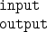

The directory parflow/data is mirrored in
/home/nyx0/parflow/data. It has two subdirectories:

which contain the input and output for ParFlow runs. These
directories live on different machines. The input directory is
on helios because we want nightly backup protection for these files.
The output directory is on nyx because we don't have the space on
helios, and it is not necessary to have nightly backups for this data
since it can be re-created from the input files. You do not need
to remember which directory is where because the ``other'' machine
has a link to the correct place. For example, parflow/data/output
is a link to /home/nyx0/parflow/output.